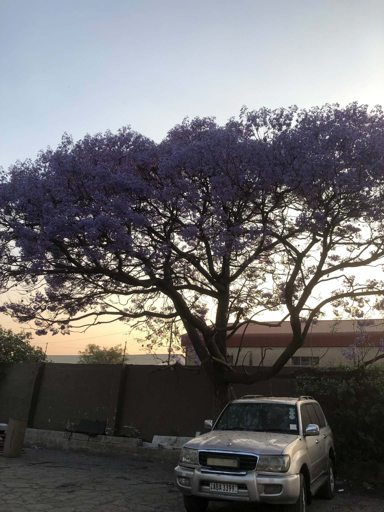
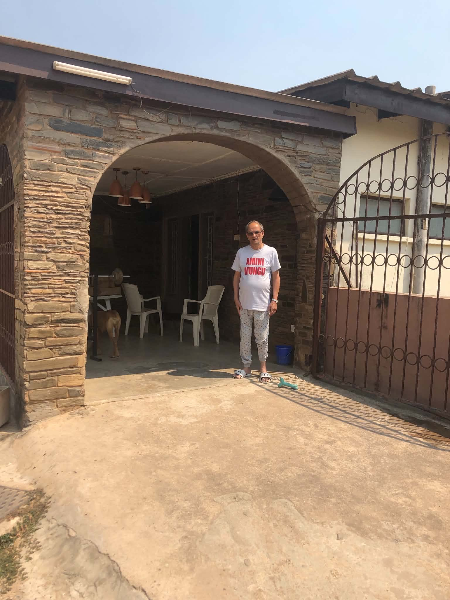
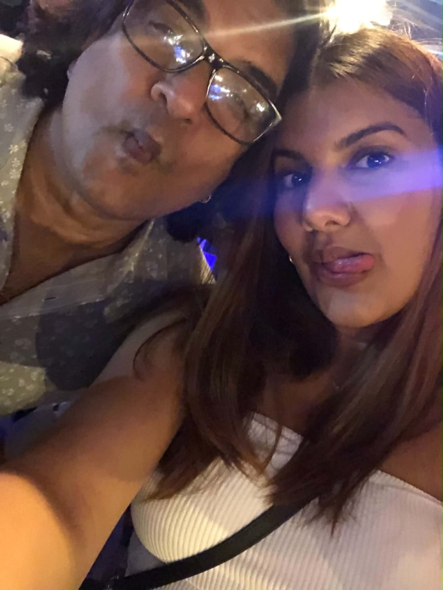
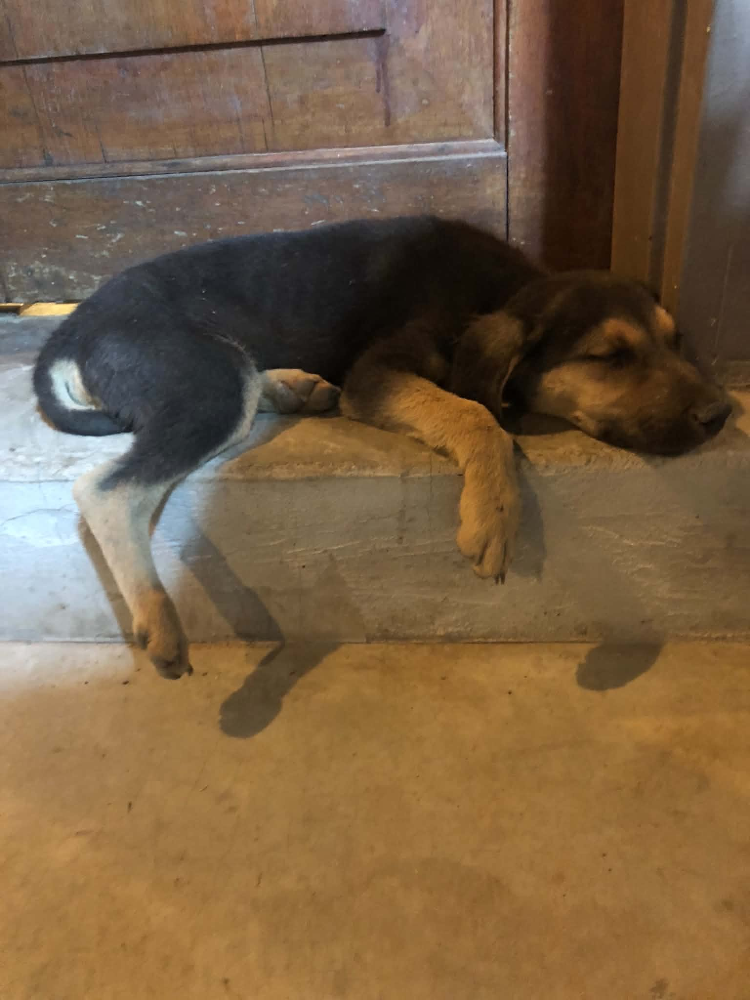
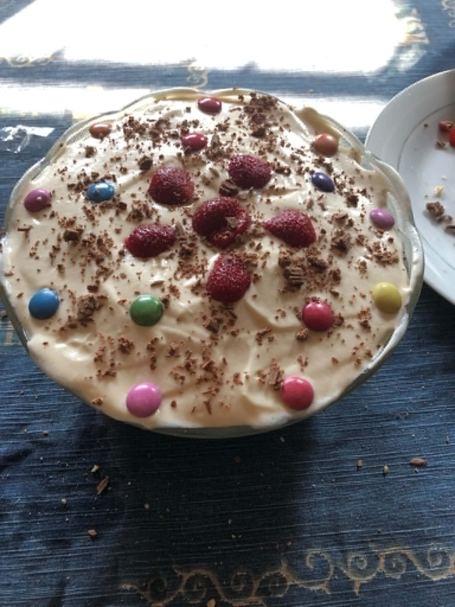
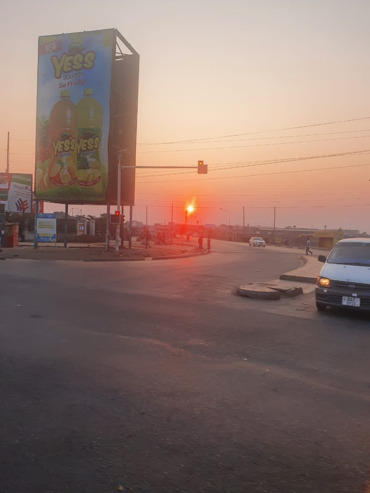

It's been a minute, huh? We've known each other for a while, and you've seen me in my younger days, but seeing you again as an adult was quite an interesting experience.
One thing I really love about you is how reasonable and moderate you are. Every day came with certainty and brought peace to my heart. You're early to rise and early to sleep, which, although it took me some getting used to, I ultimately appreciated. Yes, there were moments when I perhaps took you for granted and wanted more, but with each passing day, I knew what I was going to get, and that is a love worth experiencing. Certain, moderate, and predictable.
Further, I do love the way you view life. You don't seem to take it too seriously, and you actually stop to smell the roses. That is underrated, and again, a love that is slow and steady is a love worth experiencing. I'll definitely be back someday.

home
Joy Mama
Rolo having a nap
Trifle, a passed down family recipe
early to rise